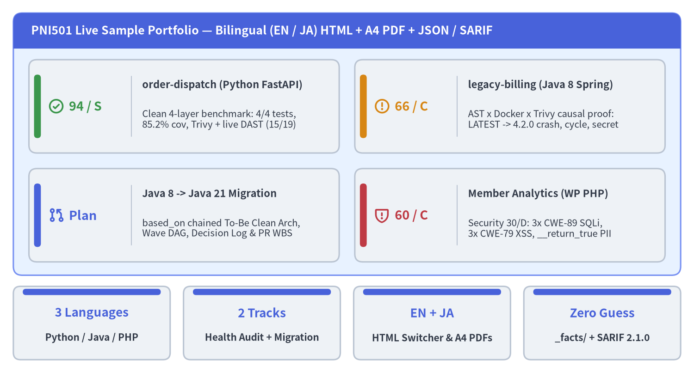

サンプルレポートギャラリー (Workflow v2 実測公開)
PNI501 Workflow v2 を examples/ 配下の実リポジトリ群に対してエンドツーエンド実行し生成した、日英バイリンガル（English / 日本語）HTML・A4 ベクター PDF レポートの実例集です。すべての公開レポートは、決定論的 AST 解析・隔離 Docker コンテナ実行検証・Trivy SCA/IaC スキャン・ライブ HTTP DAST ペネトレーションテスト（該当対象）・アクション粒度 実行監査 DAG・7軸 決定論ベースライン vs AI Δ（±10pt）・ダウンロード可能な ScoreResult v2.0 JSON / ScoreSummary / SARIF 2.1.0 を備えています。

Source Code
from drawlib.canvas import save, setup
from drawlib.icons import phosphor
from drawlib.smartarts import KpiCards, Panel
from drawlib.styles import Styles
setup(width=156, height=84, dpi=150)
outer = Panel(
"PNI501 Live Sample Portfolio — Bilingual (EN / JA) HTML + A4 PDF + JSON / SARIF",
header_variant="filled",
style=Styles.PrimaryNeutral.patch(shape_r=2.0),
header_style=Styles.PrimaryFlat,
text_style=Styles.WhiteBold.patch(text_size=12.0),
)
outer.draw(xy=(3.0, 22.0), width=150.0, height=59.0)
cards = KpiCards(
style=Styles.Neutral.patch(shape_r=1.8),
metric_style=Styles.SuccessBold.patch(text_size=13.0),
text_style=Styles.DarkBold.patch(text_size=10.5),
description_style=Styles.Dark.patch(text_size=9.8),
accent_position="left_pill",
accent_style=Styles.SuccessFlat,
icon_style=Styles.SuccessBold,
spacing=3.5,
)
cards.add(
"94 / S",
"order-dispatch (Python FastAPI)",
"Clean 4-layer benchmark: 4/4 tests,\n85.2% cov, Trivy + live DAST (15/19)",
icon=phosphor.check_circle,
)
cards.add(
"66 / C",
"legacy-billing (Java 8 Spring)",
"AST x Docker x Trivy causal proof:\nLATEST -> 4.2.0 crash, cycle, secret",
accent_style=Styles.WarningFlat,
metric_style=Styles.WarningBold.patch(text_size=13.0),
icon_style=Styles.WarningBold,
icon=phosphor.warning_circle,
)
cards.add(
"Plan",
"Java 8 -> Java 21 Migration",
"based_on chained To-Be Clean Arch,\nWave DAG, Decision Log & PR WBS",
accent_style=Styles.PrimaryFlat,
metric_style=Styles.PrimaryBold.patch(text_size=13.0),
icon_style=Styles.PrimaryBold,
icon=phosphor.git_pull_request,
)
cards.add(
"60 / C",
"Member Analytics (WP PHP)",
"Security 30/D: 3x CWE-89 SQLi,\n3x CWE-79 XSS, __return_true PII",
accent_style=Styles.DangerFlat,
metric_style=Styles.DangerBold.patch(text_size=13.0),
icon_style=Styles.DangerBold,
icon=phosphor.shield_warning,
)
cards.draw(xy=(6.5, 25.0), width=143.0, height=45.5, columns=2)
footer = KpiCards(
style=Styles.Neutral.patch(shape_r=1.6),
metric_style=Styles.PrimaryBold.patch(text_size=12.5),
text_style=Styles.DarkBold.patch(text_size=10.0),
accent_style=Styles.PrimaryFlat,
accent_position="top_bar",
metric_layout="top_stack",
spacing=3.0,
)
footer.add("3 Languages", "Python / Java / PHP")
footer.add("2 Tracks", "Health Audit + Migration")
footer.add("EN + JA", "HTML Switcher & A4 PDFs")
footer.add("Zero Guess", "_facts/ + SARIF 2.1.0")
footer.draw(xy=(3.0, 3.0), width=150.0, height=16.5, columns=4)
save()
1. 公開レポート一覧マトリクス
各サンプルレポートは docs/reports/<slug>/ 直下に自己完結して出力され、ブラウザで読めるバイリンガル HTML・印刷用 A4 ベクター PDF・機械可読な JSON / SARIF を同一 URL 配下から直接参照できます：
| 対象サンプル | トラック・技術スタック | 評価結果 | インタラクティブ HTML | A4 ベクター PDF | 機械可読アーティファクト |
|---|---|---|---|---|---|
order-dispatch (examples/python/api_fastapi_clean) |
健全性監査 Python 3.11+ / FastAPI |
94 / 100 (Grade S) 12/16 ルール PASS |
日本語 / English | PDF (日本語) / PDF (EN) | Score JSON · Summary · SARIF |
legacy-billing (examples/java/api_spring_messy) |
健全性監査 Java 8 / Spring Boot |
66 / 100 (Grade C) ビルド破綻 + 19件検出 |
日本語 / English | PDF (日本語) / PDF (EN) | Score JSON · Summary · SARIF |
legacy-billing 移行計画 (based_on: java_api_spring_messy) |
マイグレーション計画 Java 21 + Spring Boot 3.4 + Clean Arch |
段階的 PR 実行計画 4 Wave · Phase 0–4 |
日本語 / English | PDF (日本語) / PDF (EN) | Migration Plan JSON |
Member Analytics Portal (examples/php/wp_plugin_messy) |
健全性監査 PHP 7.4 / WordPress プラグイン |
60 / 100 (Grade C) Security 30/D · 5 CWE シンク |
日本語 / English | PDF (日本語) / PDF (EN) | Score JSON · Summary · SARIF |
2. 各サンプルレポートの見どころ
2.1 order-dispatch（Python FastAPI Clean — Grade S・94/100）
- クリーンマイクロサービスの基準ベンチマーク：14ファイル（435 LOC）で型安全性・インポート衛生・Google 形式 Docstring すべて 100%、循環依存ゼロの 4 層非巡回アーキテクチャ（
api -> services -> domain + infra）を可視化しています。 - 実測 Docker + Trivy + ライブ DAST：
--network=noneオフライン単体テスト 4/4 合格（行カバレッジ85.2%・分岐62.5%・/healthz -> 200起動確認）、アプリ依存 CRITICAL/HIGH CVE ゼロ、15/19 ライブ DAST プローブ通過の一方で、本番公開前に塞ぐべきCWE-306（未認証POST /v1/orders）・CWE-200（/openapi.json公開）・CWE-693（X-Content-Type-Options欠如）を正確に特定しています。 - AI 誤検知トリアージログ：ベースイメージ
python:3.12.6-slim-bookwormに同梱されたビルド専用ツールpip@24.2の 5 件の CVE をfinding_adjustmentsで根拠付き再分類する Workflow v2 の透明性を実例で示しています。
2.2 legacy-billing（Java 8 Spring レガシー — Grade C・66/100）
- AST × Docker × Trivy の因果相関実証：
pom.xmlの未固定spring-boot-starter-web:LATESTが、実 Maven ビルド時にspring-boot-4.2.0.jar（JDK 17+ バイトコード61.0）を解決して Java1.8（52.0）と衝突クラッシュし、さらに廃止済みopenjdk:latestで Dockerfile も失敗、Trivy 静的 SCA では未固定レンジ一致（is_unpinned_specifier=True）によりCVE-2022-22965が検出され、結果として JaCoCo・DAST まで連鎖ブロックされる因果を一貫して証明しています。 - ホットスポット対比と ±10pt アンカー：リスク集中の
BillingManager.java（循環 DI・認知複雑度 56・引数 8・静的INVOICE_CACHE・文字列==バグ・空catch・無効なprivate @Transactional）とクリーンな不変 DTOInvoiceRecord.javaのコントラストを描画しています。
2.3 legacy-billing マイグレーション実行計画（based_on: java_api_spring_messy）
- 前提監査
based_on連鎖：完了済みのjava_api_spring_messy監査レコード（.pni/cache/workflow_state.db）から検証済み As-Is ファクトを自動継承し、ハルシネーションゼロの To-Be 移行計画を合成しています。 - Clean Architecture 移行と PR 粒度 WBS：Java 21 LTS + Spring Boot 3.4 + PostgreSQL 16（JPA + Flyway）+ Redis 7 + Clean Architecture（
domain / port / usecase / adapter）に向けたトポロジカル Wave 分割、Hyrum の法則に基づく意思決定ログ（currency == "USD"・controllerPing・固定100Lリトライ）、Phase 0〜4 の検証ゲート付き PR 計画を提示しています。
2.4 Member Analytics Portal（WordPress PHP プラグイン — Grade C・60/100・Security 30/D）
- WordPress 特化セキュリティ SAST：PHP 8.2 環境での
php -l構文検査・5フック起動スモークは通る一方、5件の HIGH CWE 危険シンク（wp_users/wp_map_eventsに対する 3件のCWE-89SQL インジェクションと 2件のCWE-79XSS ＋ ショートコード$_GETXSS）、ハードコード秘密鍵、__return_trueによる未認証 REST PII 流出、wp_ajax_nopriv検索、'read'権限による管理設定改ざん、全4ファイルのABSPATHガード欠如、テスト 0 件を網羅的に検出しています。
3. 統合公開ポータル構成（docs_src/ -> docs/）
公式サイト本体と公開サンプルレポートは docs_src/ 配下の単一ソースツリーで管理され、GitHub Pages ルート docs/ へ一括コンパイル・リンク検査されます：

Source Code
from drawlib.canvas import save, setup
from drawlib.diagrams.architecture import ArchitectureDiagram, Node, NodeGroup, PhosphorIcon
from drawlib.styles import Styles
setup(width=158, height=74, dpi=150)
diag = ArchitectureDiagram(
node_style=Styles.PrimaryBold,
node_text_style=Styles.DarkBold.patch(text_size=10.0),
edge_style=Styles.DarkBold,
edge_text_style=Styles.DarkBold.patch(text_size=9.5),
node_card_style=Styles.WhiteBordered.patch(shape_r=1.5),
)
g_src = diag.add(
NodeGroup(
title="1. Source of Truth (docs_src/)",
width=46.0,
height=66.0,
style=Styles.Neutral.patch(shape_r=2.0),
text_style=Styles.DarkBold.patch(text_size=10.5, halign="left", valign="top"),
),
xy=(3.0, 4.0),
)
n_site_src = g_src.add(
Node(
"docs_src/site/\ndrawlib site (en + ja)",
width=40.0,
height=18.0,
icon=PhosphorIcon.BOOK_OPEN_TEXT,
icon_size=5.4,
card_style=Styles.PrimaryNeutral.patch(shape_r=1.5),
),
xy=(23.0, 46.0),
)
n_rep_src = g_src.add(
Node(
"docs_src/reports/<slug>/\ndrawlib doc + _facts/ + en/ja",
width=40.0,
height=18.0,
icon=PhosphorIcon.FILE_TEXT,
icon_size=5.4,
style=Styles.SecondaryBold,
card_style=Styles.SecondaryNeutral.patch(shape_r=1.5),
),
xy=(23.0, 17.0),
)
g_build = diag.add(
NodeGroup(
title="2. Build & Verify",
width=38.0,
height=66.0,
style=Styles.Neutral.patch(shape_r=2.0),
text_style=Styles.DarkBold.patch(text_size=10.5, halign="left", valign="top"),
),
xy=(58.0, 4.0),
)
n_build = g_build.add(
Node(
"./docs_src/build.sh\npni report build\n+ drawlib serve --check",
width=32.0,
height=26.0,
icon=PhosphorIcon.GEAR,
icon_size=5.6,
style=Styles.WhiteBold,
text_style=Styles.WhiteBold.patch(text_size=10.0),
card_style=Styles.PrimaryFlat.patch(shape_r=1.5),
),
xy=(19.0, 31.5),
)
g_out = diag.add(
NodeGroup(
title="3. GitHub Pages (docs/)",
width=49.0,
height=66.0,
style=Styles.Neutral.patch(shape_r=2.0),
text_style=Styles.DarkBold.patch(text_size=10.5, halign="left", valign="top"),
),
xy=(106.0, 4.0),
)
n_site_out = g_out.add(
Node(
"docs/{en,ja}/ + index.html\nwww.pni501.com",
width=43.0,
height=18.0,
icon=PhosphorIcon.GLOBE,
icon_size=5.4,
card_style=Styles.PrimaryNeutral.patch(shape_r=1.5),
),
xy=(24.5, 46.0),
)
n_rep_out = g_out.add(
Node(
"docs/reports/<slug>/\nHTML + EN/JA PDF + JSON/SARIF",
width=43.0,
height=18.0,
icon=PhosphorIcon.FILE_PDF,
icon_size=5.4,
style=Styles.SuccessBold,
card_style=Styles.SuccessNeutral.patch(shape_r=1.5),
),
xy=(24.5, 17.0),
)
diag.connect(n_site_src, n_build, label="site html")
diag.connect(n_rep_src, n_build, label="pdf + html")
diag.connect(n_build, n_site_out, label="portal")
diag.connect(n_build, n_rep_out, label="reports")
diag.draw()
save()
ローカル環境でポータル全体を再ビルドしリンク切れゼロを検証するには、以下を実行します：
./docs_src/build.sh
./docs_src/serve.sh